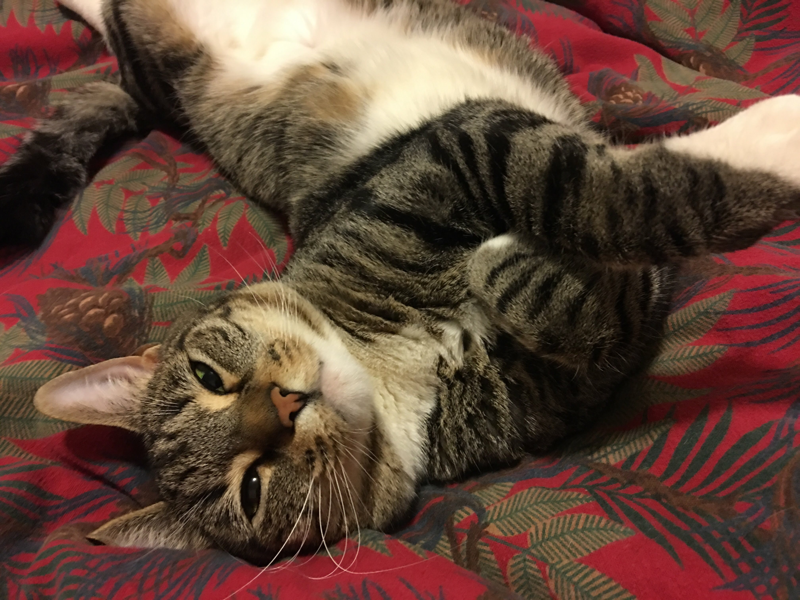
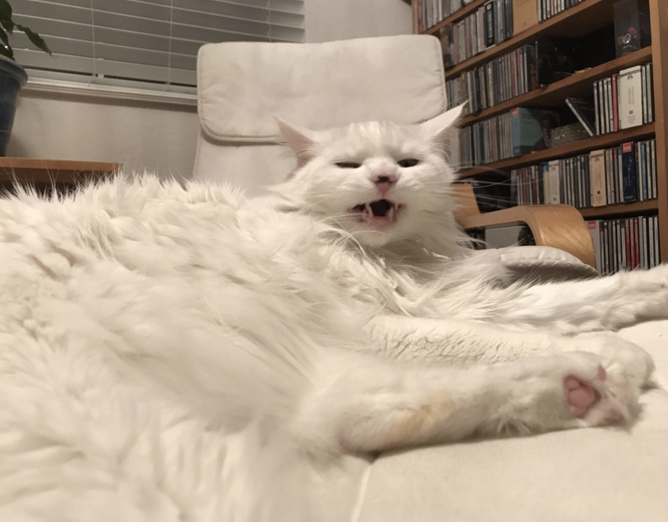
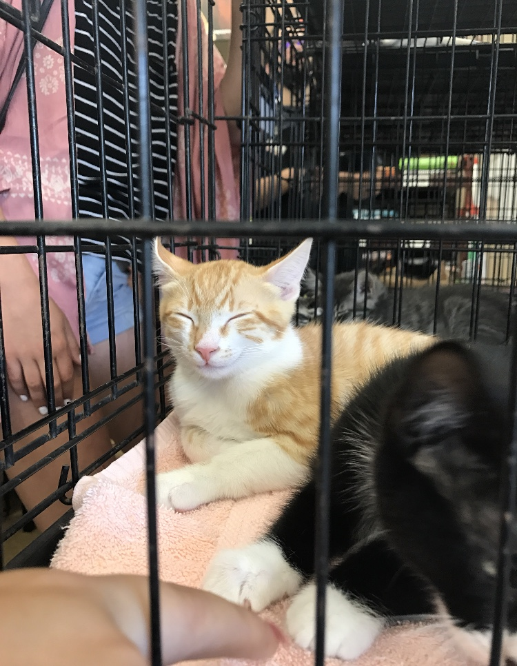
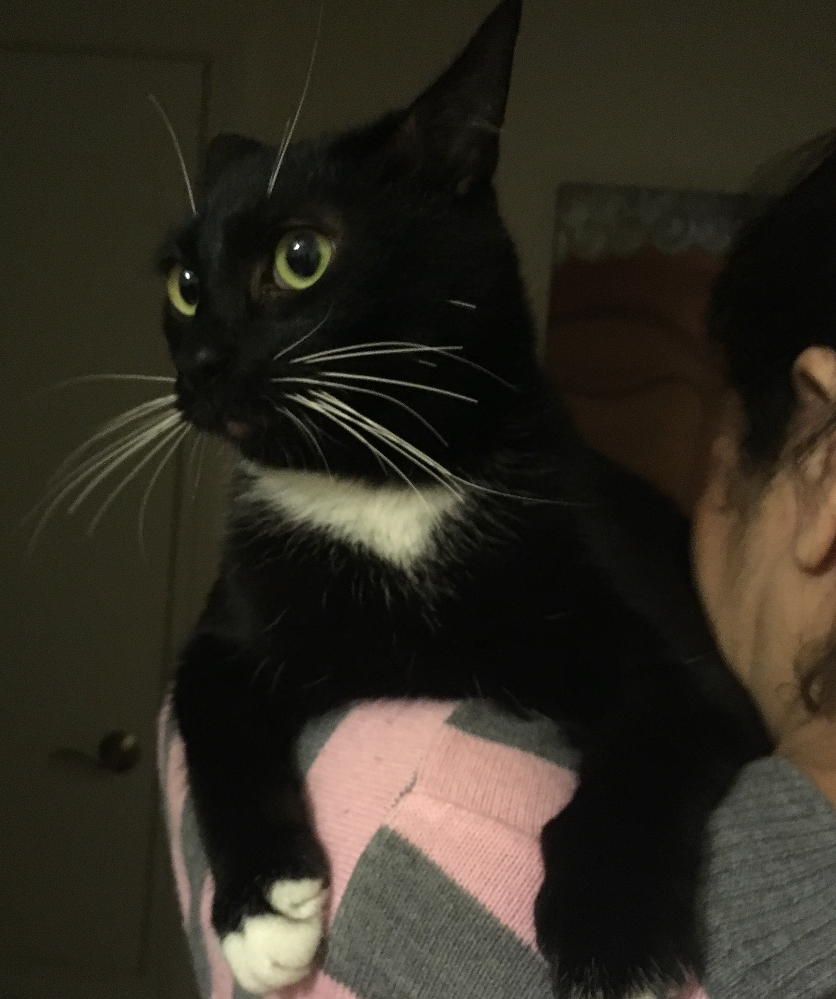
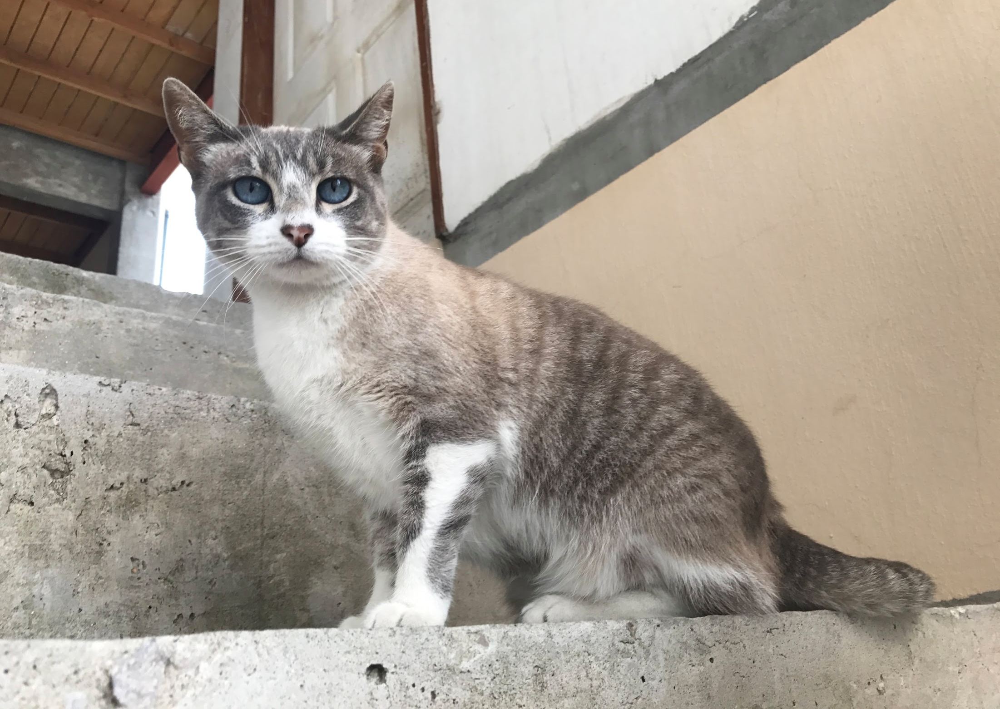
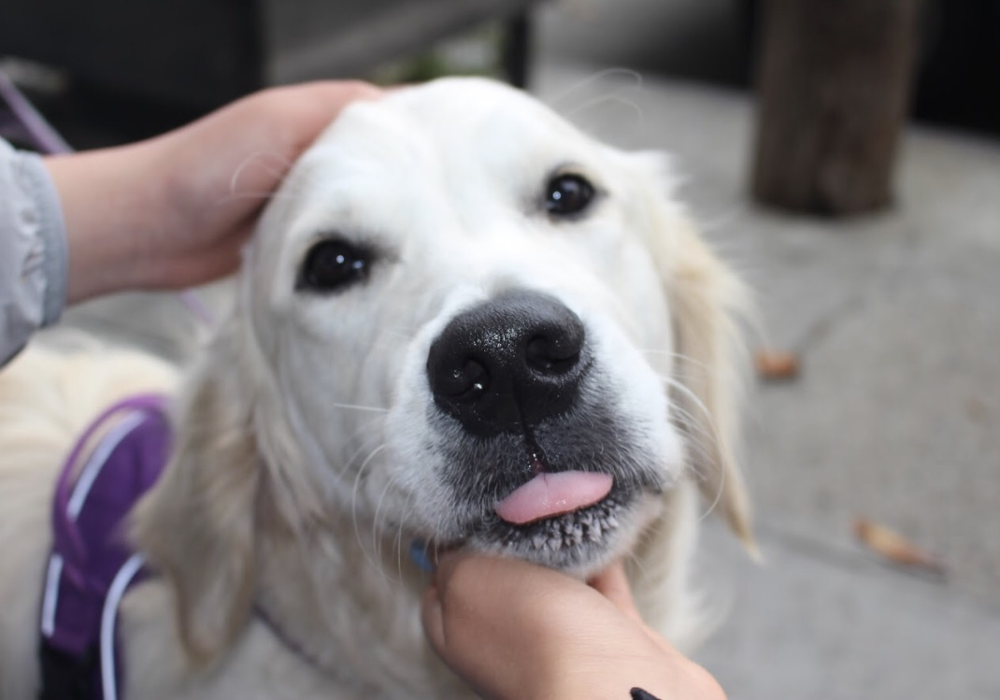
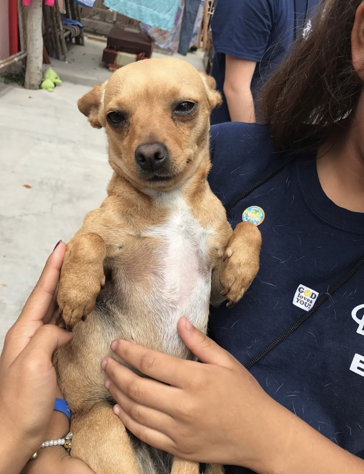
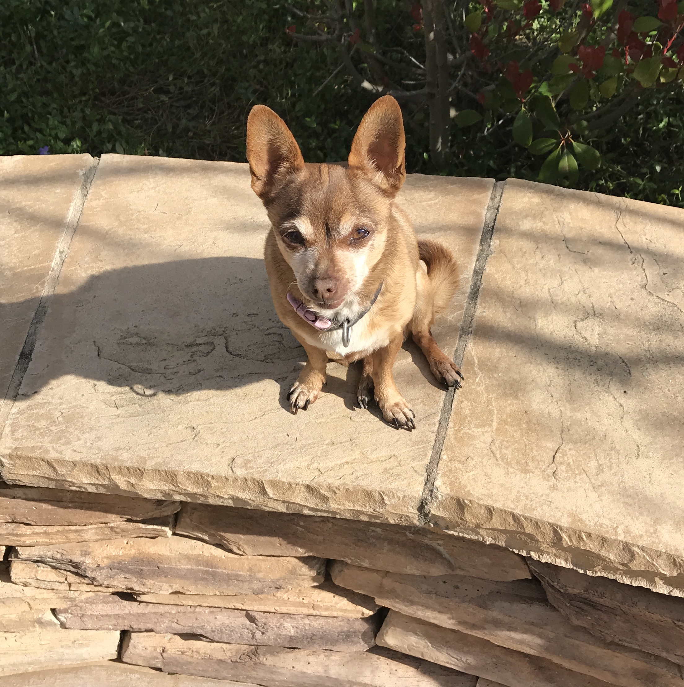
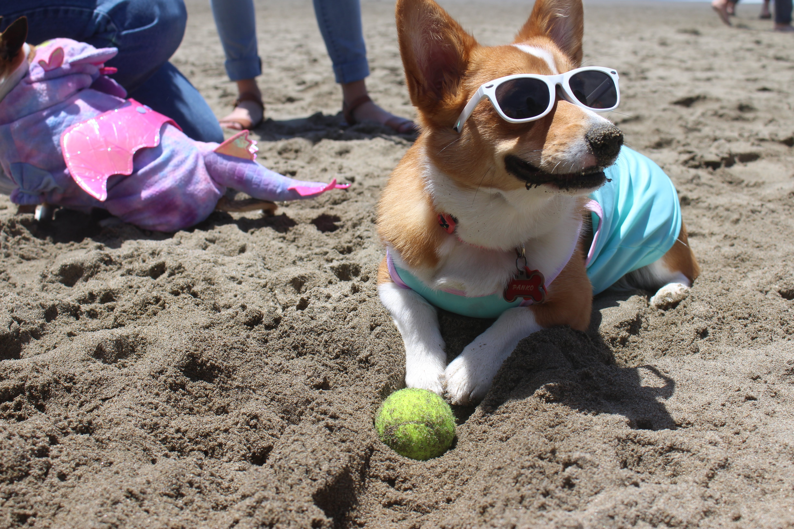

Shelter Me is a nonprofit organization meant to bring awareness to the forgotten shelter animals.





- Approximately 6.5 million companion animals enter U.S. animal
shelters nationwide every year.
- Each year, approximately 1.5 million shelter animals are euthanized.
- Approximately 3.2 million shelter animals are adopted each year.
- Homeless animals outnumber homeless people 5 to 1.



